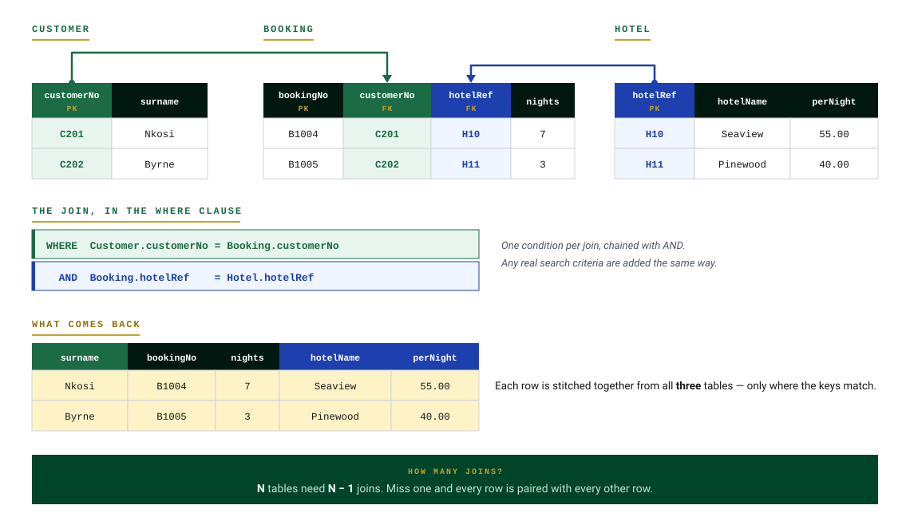

Why Joins Are Needed
An equi-join is needed when a query uses two tables. Imagine a garage database with a Car table and a Customer table, where CustomerID is the primary key of Customer and a foreign key in Car.
Task: find the addresses of all Ford Fiesta owners. The problem: Address lives in the Customer table, but Model lives in the Car table — the query needs data from both.
SELECT Make, Model, Address FROM Car, Customer WHERE Model = "Fiesta";
This query produces nonsense — every Fiesta gets paired with every customer's address, because nothing tells the database which customer owns which car.
Writing an Equi-Join
The fix is to add the join condition — matching the primary key in one table to the foreign key in the other:
SELECT Make, Model, Address FROM Car, Customer WHERE Model = "Fiesta" AND Car.CustomerID = Customer.CustomerID;
The equi-join always follows this pattern:
Table1.PrimaryKey = Table2.ForeignKey

FROM (separated by a comma), and the join condition Table1.Key = Table2.Key in the WHERE clause, ANDed with any search criteria. Forgetting the join is the most common lost mark.Test Yourself
A school database has Pupil (pupilID PK, forename, surname, classCode*) and Class (classCode PK, teacher, room). Explain why this query is wrong, and rewrite the WHERE clause correctly:
SELECT forename, surname, teacher FROM Pupil, Class WHERE room = "12";
Marking Instructions
There is no join condition, so every pupil is matched with every class (1 mark). Corrected: WHERE room = "12" AND Pupil.classCode = Class.classCode (1 mark).
Using the garage database (Car: registration PK, make, model, customerID*; Customer: customerID PK, name, address, town), write a query to display the name of every customer who owns a Vauxhall.
Marking Instructions
SELECT Name FROM Car, Customer WHERE Make = "Vauxhall" AND Car.CustomerID = Customer.CustomerID;
1 mark: SELECT Name with both tables in FROM. 1 mark: correct search condition. 1 mark: correct equi-join.